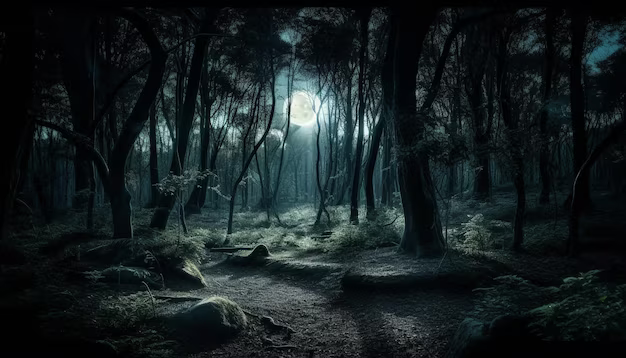
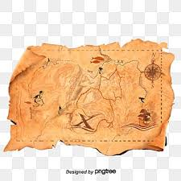

Você está na entrada de uma misteriosa floresta. O que fazer?
Você encontra dois caminhos: um à direita e um à esquerda.
Você encontra uma cabana Você encontra um túnel
Você encontra um velho sábio

O sábio revela a entrada secreta O mapa mostra um tesouro escondido
Encontrar a Entrada Secreta
Seguir para o Tesouro